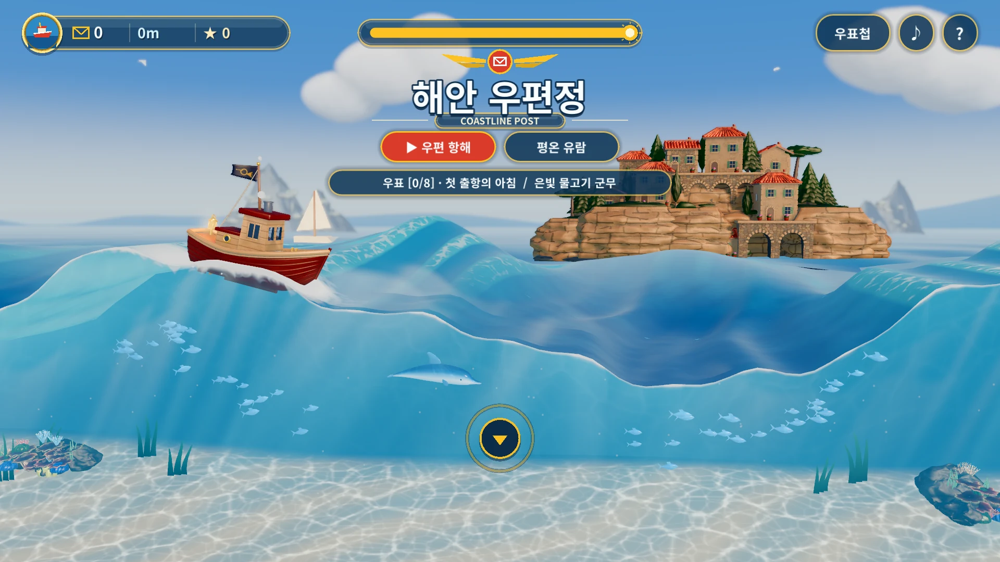
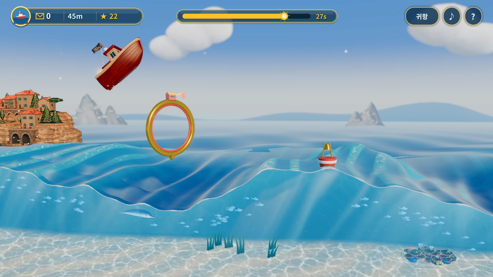
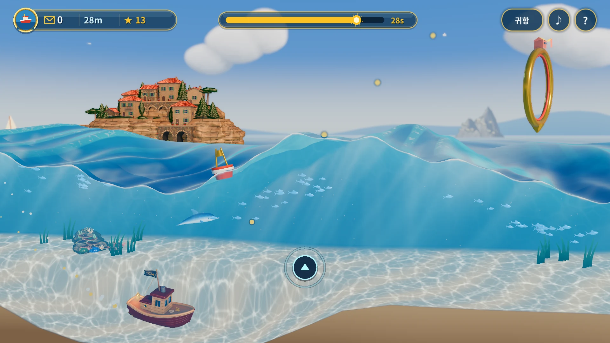
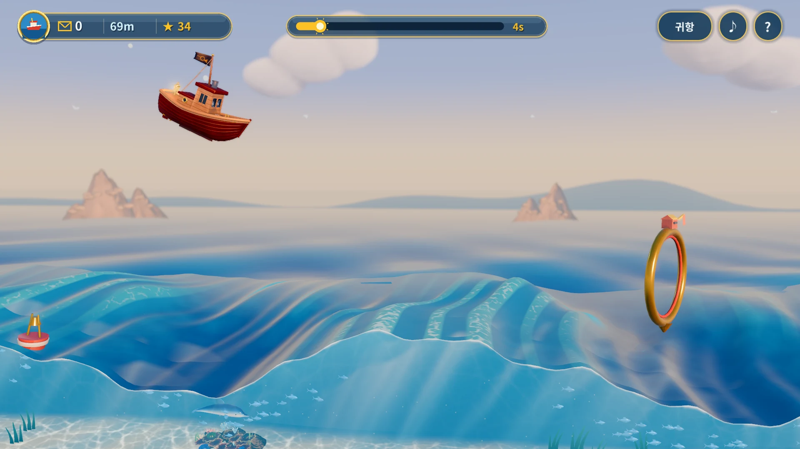
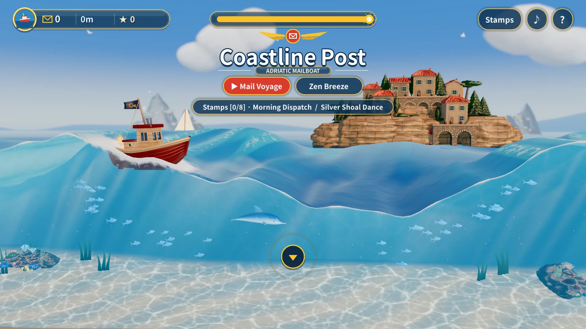

⚠️ [G-004 현재 프로토타입/미완성 요소 고지]
본 빌드는 초기 프로토타입의 72%+ 개방형 여백·2.25m 큰 너울 심플함 × 확정 시안(Option B)의 AgX 햇살·세룰리안 그림자·수중 빛내림 감성을 단일 본편(GameSession)에 통합한 v8.5 대표 기준 빌드입니다. 기항지별 고유 건축 바리에이션, 추가 BGM 확장, 스토어 실결제/업적은 비주얼 확정 후 수평 확장 단계(EVOLVING) 항목입니다.
Windows 10 / 11 (64-bit) · Godot 4.7.2 Native Forward+
해안 우편정 (Coastline Post) v8.5 설치파일
바탕화면·시작메뉴 바로가기 자동 생성 · 프로그램 추가/제거(Uninstall) 지원 · 내장 그래픽용 Run_Compatibility_OpenGL3.bat 호환 런처 동봉
• 파일명: CoastlinePost_v8.5_Win64_Setup.exe (93,312,942 bytes / 88.99 MiB)
• SHA-256: 0210294057e9a79d978564057e5bf35c8fdfa4a3ac645ba5075d69a042e0d930
• 안내: 개인 인디 미서명 인스톨러이므로 Windows SmartScreen 안내 창이 뜨면 [추가 정보(More info)] → [실행(Run anyway)]을 눌러 설치하세요. 설치 경로는 사용자 로컬 폴더(%LOCALAPPDATA%\Programs\Zestward\CoastlinePost)로 관리자 권한 없이 깔끔하게 설치됩니다.


마루 도약 & 황동 우편 링: 좌·우 블러 왜곡 0%, 전 평면 선명한 원터치 도약.

심해 잠수 & 수중 사선 빛내림: 파도 마루 집광 연동 빛줄기, 8점 진주 탄도 아크, 모래 커스틱.

황혼 골든아워: 실시간 석양 색온도 전이 및 선미 황동 등불 온기.

Dual-Native 한/영 지원: 런타임 즉시 언어 전환 및 조이패드(Steam Deck) 대응.